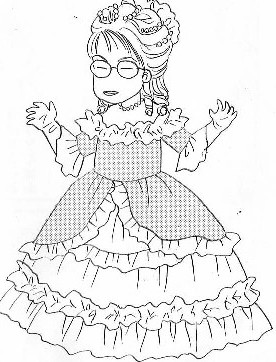
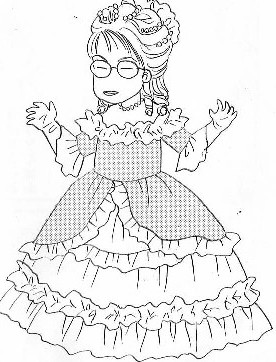
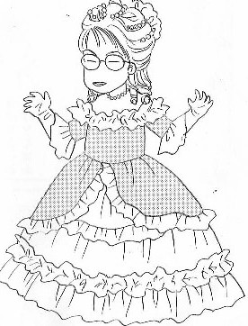

Monolog 独白 ・
（２３）２周年なのだ ある会話。 「いや、サイトをオープンしてから、この10月でついに丸２年経ったよ」 「そうか」 「“おめでとう”とか何とかないのか？」 「なんで....」 「・・・・だから....オープンして２周年記念ということで」 「何もしなくたって、時は経つ」 「・・・・・(ー_ー；」 と言うわけで、単なる２周年なのだ.... 
ある会話。 「いや、サイトをオープンしてから、この10月でついに丸２年経ったよ」 「そうか」 「“おめでとう”とか何とかないのか？」 「なんで....」 「・・・・だから....オープンして２周年記念ということで」 「何もしなくたって、時は経つ」 「・・・・・(ー_ー；」 と言うわけで、単なる２周年なのだ.... 

以前へ 以降へ 目次へ